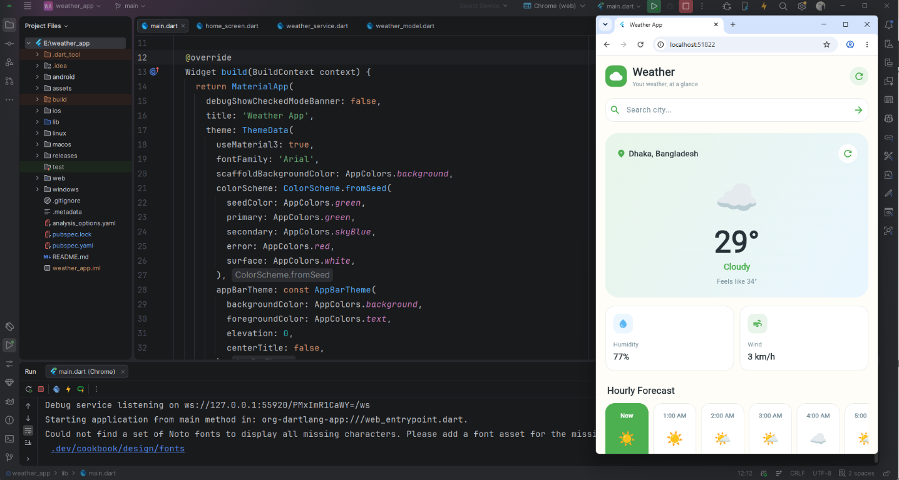
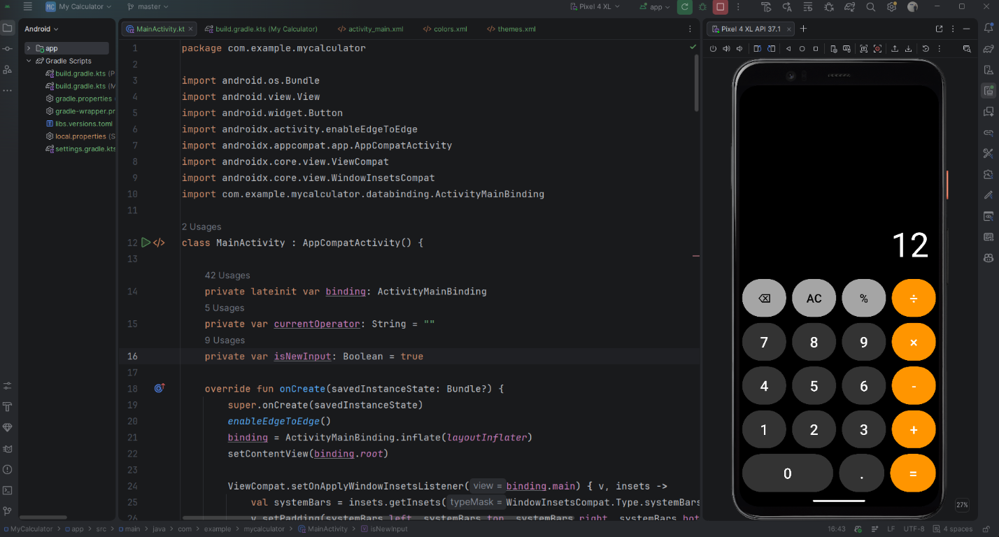
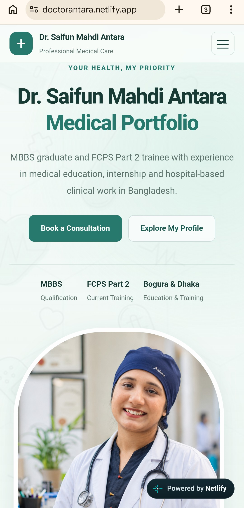
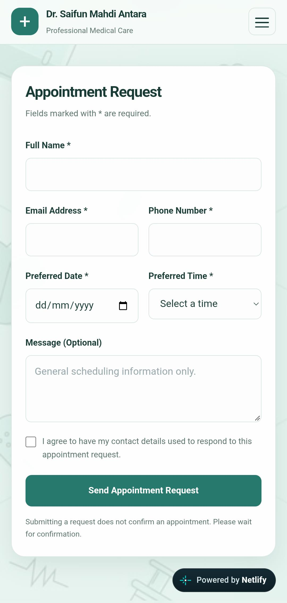

Hello, I'm
Fazly Rahi
Computer Science & Engineering Student | Aspiring Developer
Computer Science and Engineering undergraduate building mobile, backend, and web projects with a practical, learn-by-building approach.

Hello, I'm
Computer Science and Engineering undergraduate building mobile, backend, and web projects with a practical, learn-by-building approach.
I am a Computer Science and Engineering undergraduate at American International University-Bangladesh, currently in my 10th semester. My academic work has built a foundation in programming, data structures and algorithms, object-oriented development, operating systems, databases, and software engineering.
I have built projects ranging from Flutter mobile apps and Kotlin Android applications to database-connected C# software, Java and C# object-oriented exercises, and an Arduino project. I also designed and built this portfolio using HTML, CSS, and JavaScript.
I enjoy learning new tools, understanding how systems fit together, and improving ideas through hands-on practice. I am looking to keep growing and apply my skills in a professional software environment.
C, C++, Java, C#, Kotlin, and Dart. Foundational HTML and CSS, with basic JavaScript.
Data structures, algorithms, object-oriented programming, and Linux operating-system basics.
Android Studio with Kotlin and Flutter development for Android and iOS.
.NET, database design, basic SQL queries and C# database connectivity; beginner MongoDB.
Git, GitHub, command-line compilation, and Arduino fundamentals.
SRS documentation, Waterfall, V-Model, Agile, and beginner-level Scrum and risk management.
A selection of websites and mobile apps I've built. Explore the live site, project documentation, or source code.
01 / Mobile app

A cross-platform Flutter weather app that looks up cities and presents current conditions, hourly details, and a seven-day forecast using Open-Meteo weather and geocoding APIs. Tested on multiple Android devices.
02 / Android app

My first Android application, built with Kotlin in Android Studio. The project helped me put mobile-development fundamentals into practice.
03 / Website


A doctor’s portfolio website with an appointment-request form and request handling. The frontend uses HTML, CSS, and JavaScript, with Firebase and EmailJS supporting backend data and email workflows. Hosted free on Netlify and connected to GitHub for automatic deployments when updates are pushed.
I've also built entry-level Java and C# applications using object-oriented principles such as inheritance and encapsulation, including command-line projects. My experience also includes a C# and .NET backend project with database connectivity and basic queries, a hands-on Arduino embedded-systems project, and this responsive portfolio built with HTML, CSS, and JavaScript.
Bachelor of Science in Computer Science and Engineering
Currently in 10th semesterUndergraduate studies at American International University-Bangladesh (AIUB).
Govt. Science College, Tejgaon, Dhaka
GPA 5.00 / 5.00Bindu Basini Govt. Boys' High School
GPA 5.00 / 5.00Interested in my work, want to discuss an opportunity, or connect? Feel free to reach me by email or through my profiles.